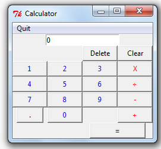

I have created a calculator, it does pretty much all the basics multiplying, dividing, adding, and subtracting.
It has the functions of making the number you want negative or positive. It Will also allow the use of decimals.
It has been given memory functions: will store a number, return it, or will clear it altogether.
This project was kinda fun, at least now I have a mini calculator. I would of liked to of add parentheses, but that was not something I could easily figured out. I am glad I could of add the memory functions, because I think they make it seem more like a real calculator
This is the calculator body
This is the calculator in memory mode
This part was challenging to me, trying to get ride of the .0 after a function was made
Go to my Github link here